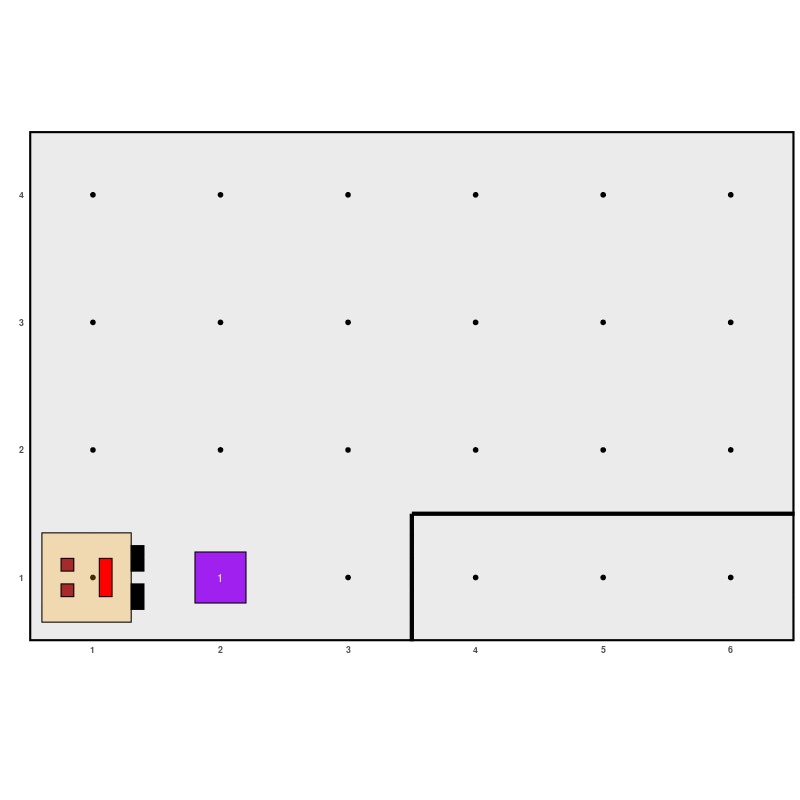
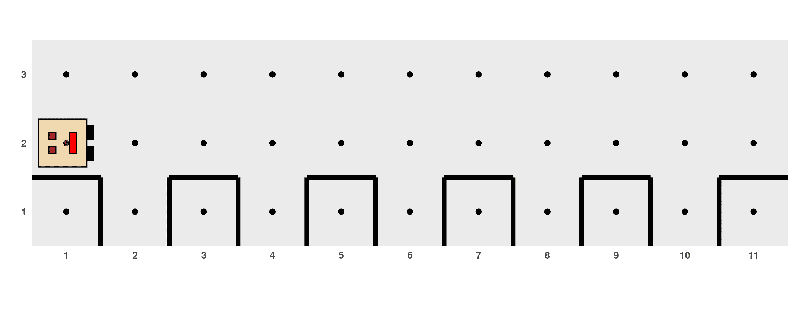

As mentioned earlier, an algorithm is composed of an ordered sequence of commands that are executed one after another. However, it is often necessary to use special commands that alter or control the order in which actions are executed. We refer to these rules as control structures for the flow of actions, which allow us to control the flow of actions in an algorithm or program. They can be classified as sequential, conditional, and iterative control structures.
Sequential Control Structures
Sequential control structures are composed of a defined number of actions that are placed in a specific order and executed one after another. The examples we discussed earlier are formed by this type of structure.
Conditional Control Structures
In certain parts of an algorithm, it may be useful to pause and ask a
question because you have reached a situation where there may be one or
more options available to continue. Depending on the answer to the
question, which must always be TRUE or
FALSE, the algorithm will follow certain
actions and ignore others. These questions and answers represent
decision-making processes that lead to different paths within the
algorithm, allowing the solution to the problem at hand to be flexible
and adapt to different situations. These types of control structures are
called conditional (or selection structures)
and can be simple, double, or
multiple.
Simple Conditional Structures
They involve a logical evaluation, and if the result is
TRUE, the actions enclosed by this
structure are executed. They are expressed in R with the following
syntax:
if (condition) {
...code to execute actions...
}The word if indicates the logical
evaluation command, condition indicates
the evaluation to be performed, and the instructions to be executed only
if the condition is met, that is, if the evaluation results in
TRUE, are detailed between curly braces.
If the condition is not satisfied, no action is executed, and the
program continues its sequential structure with the code that follows
the last curly brace.
Karel is going to help us illustrate this. The following table shows
the logical evaluations that the robot can perform about its world. For
example, if we execute the function
front_is_clear(), we will get the value
TRUE if there is indeed no wall in front
of Karel, or the value FALSE if there is a
wall.
| R Function | Returns TRUE if... |
|---|---|
| front_is_clear() | ...there is no wall in front of Karel. |
| front_is_blocked() | ...there is a wall in front of Karel. |
| left_is_clear() | ...there is no wall to the left of Karel. |
| left_is_blocked() | ...there is a wall to the left of Karel. |
| right_is_clear() | ...there is no wall to the right of Karel. |
| right_is_blocked() | ...there is a wall to the right of Karel. |
| beepers_present() | ...there are beepers where Karel is. |
| no_beepers_present() | ...there are no beepers where Karel is. |
| karel_has_beepers() | ...Karel has beepers in its beeper bag. |
| karel_has_no_beepers() | ...Karel has no beepers in its beeper bag. |
| facing_east() | ...Karel is facing east. |
| facing_west() | ...Karel is facing west. |
| facing_south() | ...Karel is facing south. |
| facing_north() | ...Karel is facing north. |
We can use a conditional structure to modify the
fill_hole() function we created earlier so
that Karel only places an item if there wasn’t already one in the
hole:
# ------------ Definition of auxiliary functions -----------
fill_hole <- function() {
turn_right()
move()
if (no_beepers_present()) {
put_beeper()
}
turn_around()
move()
turn_right()
}
# ------------------- Main program -------------------
generate_world("mundo002")
move()
fill_hole()
run_actions()Note that although the use of indentation in the code is optional, we decided to use it to improve readability. Maintaining clarity in our programs is essential.
Double Conditional Structures
This type of conditional structure adds an action to be executed in
case the evaluated condition is not met (i.e., it returns
FALSE). The syntax is:
if (condition) {
...code to execute actions...
} else {
...code to execute actions...
}The first set of curly braces contains the actions to be performed if
the condition is met, while the second set, following the
else statement, includes the actions to be
performed if the condition is not met.
Let’s imagine that we want to create an algorithm to reverse the state of a cell, meaning that Karel puts an item if there isn’t one or removes it if there is:

For this, we can use a double conditional structure:
generate_world("mundo001")
if (beepers_present()) {
pick_beeper()
} else {
put_beeper()
}
move()
if (beepers_present()) {
pick_beeper()
} else {
put_beeper()
}
move()
if (beepers_present()) {
pick_beeper()
} else {
put_beeper()
}
run_actions()
Since we repeat the process of checking whether there is an item or not to decide whether to remove or place one three times exactly the same way, we can once again resort to the principle of algorithmic decomposition and define a function that takes care of this process, making the action of reversing the state of a cell simpler. Our code file would look like this:
# ------------ Definition of auxiliary functions -----------
reverse_state <- function() {
if (beepers_present()) {
pick_beeper()
} else {
put_beeper()
}
}
# ------------------- Main program -------------------
generate_world("mundo001")
reverse_state()
move()
reverse_state()
move()
reverse_state()
run_actions()Multiple or Nested Conditional Structures
These structures allow combining multiple conditional structures to establish more complex controls over the flow of actions, representing multiple decision-making points. We can illustrate the syntax as follows:
if (condition 1) {
...First set of actions...
} else if (condition 2) {
...Second set of actions...
} else {
...Third set of actions...
}In the above structure, there is an initial logical evaluation in
which, if the result is TRUE, the first
set of actions is executed exclusively. Otherwise, if the result is
FALSE, a second logical evaluation is
performed, leading to the execution of either the second or the third
set of actions, depending on whether its result is
TRUE or
FALSE, respectively.
Iterative Control Structures
Iterative control structures are useful when solving a problem requires repeatedly executing a set of actions. The number of times the sequence of actions needs to be repeated can be fixed or variable, depending on some data in the algorithm.
Iterative Control Structures with a Fixed Number of Iterations
These structures are applied when the exact number of times a sequence of actions needs to be repeated is known in advance. For example, consider the following problem where there are holes evenly distributed on even avenues.

We need to write a program for Karel to fill all 5 holes. We could plan something like this:
# ------------------- Main program -------------------
generate_world("mundo003")
move()
fill_hole()
move()
move()
fill_hole()
move()
move()
fill_hole()
move()
move()
fill_hole()
move()
move()
fill_hole()
move()
run_actions()It is clear that it doesn’t make sense to write the exact same code 5 times. Therefore, we can use an iterative structure:
generate_world("mundo003")
for (i in 1:5) {
move()
fill_hole()
move()
}
run_actions()The variable i is called the iteration
variable. We could have chosen another letter or word instead, but using
i is quite common. In this example, its
sole purpose is to guide the series of steps. The block of instructions
is repeated as many times as it takes for
i to reach 5 starting from 1. In general,
the syntax for this type of structure is:
for (<variable> in <value1>:<value2>) {
...Actions...
}
Iterative Control Structures with an Indeterminate Number of Iterations
In other circumstances, it may be necessary to repeat a block of
actions without knowing exactly how many times, but rather depending on
some other aspect of the ALGORITHM. The iterations can continue
while a certain condition is true. In this type of
structure, the set of instructions is repeated as long as a condition
declared at the beginning of the block continues to evaluate as
TRUE. When the condition is no longer met,
the process stops. The syntax is:
while (<condition>) {
...Actions to repeat...
}Observations:
The evaluation of the condition takes place before each iteration, including the first one. If the condition is initially
FALSE, then the actions in the body of the structure are never executed.The evaluation of the condition only takes place at the beginning of each iteration. If the condition becomes
FALSEat some point during the execution of a block, the program does not notice it until the block finishes executing and the condition is evaluated before starting the next iteration.
For example, it would be interesting to write a program to fill holes like the previous one but that works generally for other situations where there may be any number of holes in the street, like these:

Instead of using a for loop where we
have to specify the number of times the process should be repeated, we
can use a while loop so that Karel keeps
filling holes as long as there is no wall in front of it, indicating
that it has reached the end and should stop.
# ------------------- Main program -------------------
generate_world("mundo003")
while (front_is_clear()) {
move()
fill_hole()
move()
}
run_actions()Care must be taken when writing this type of structure to ensure that an infinite loop is not created, i.e., an iterative process that never ends. This would occur, for example, if, while being in the previous world, we ask Karel to turn while there are no things where it is standing:
# Do not run this! (or do, to see how it doesn't work!)
generate_world("mundo003")
while (no_beepers_present()) {
turn_left()
}
run_actions()Some examples presented in this tutorial were adapted from “Karel the robot learns Java” (Eric Roberts, 2005).